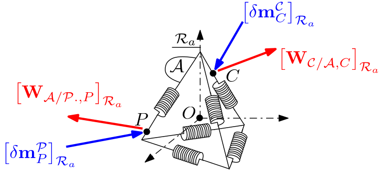
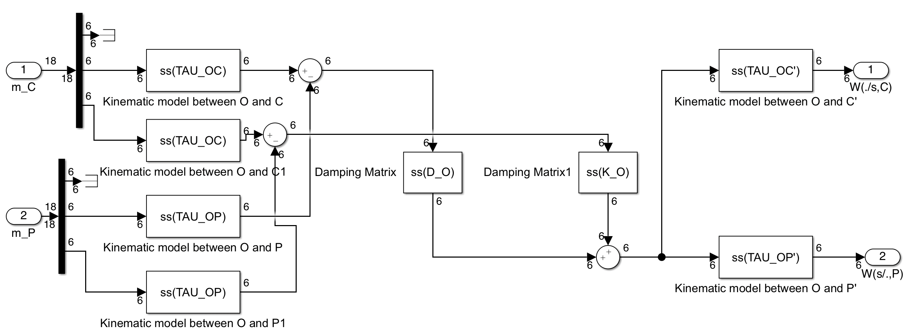

6 DOFs local spring-damper
Linear TITOP model of a spring-damper system in the 6 d.o.fs case.
This block implements the $12\times 36$ TITOP (Two-Input Two-Output Ports) model of a massless spring-damper system $\mathcal A$ and connected to a parent body $\mathcal P$ at the point $P$ and to a child body $\mathcal C$ at the point $C$, i.e. the transfer from the $36$ inputs:
- the $18$ components of the motion vector at the point $C$
- the $18$ components of the motion vector at the point $P$,
- the $6$ component external wrench applied by the child body to the spring-damper system at the point $C$,
- the $6$ component wrench applied by the spring-damper system to the parent body at the point $P$.
See also: General notations, Revolute joint, Revolute joint + configuration, Prismatic joint, 1-port flexible body, Multi port rigid body
Contents
Description
Considering a 6 d.o.fs spring mass system $\mathcal A$ centered at the reference point $O$ (see following Figure) and 2 connection points $P$ and $C$ with a parent body $\mathcal P$ and a the child body $\mathcal C$, respectively.

Let us define:
- $\mathcal{R}_a$: the local frame,
- $[\mathbf K_O]_{\mathcal{R}_a}$: the $6\times 6$ stiffness matrix at the reference point $O$, expressed in $\mathcal{R}_a$,
- $[\mathbf D_O]_{\mathcal{R}_a}$: the $6\times 6$ damping matrix at the reference point $O$, expressed in $\mathcal{R}_a$,
- $[\delta\mathbf x_O]_{\mathcal{R}_a}$: the internal deflection vector ($6\times 1$) of the spring-mass system at the point $O$, expressed in $\mathcal{R}_a$,
- $\delta\mathbf{m}^{\mathcal C}_{C}$ the motion vector ($18\times 1$) of the child body $\mathcal C$ at the point $C$. $\delta\mathbf m^\mathcal{C}_C=\left[{\boldsymbol{\mathbf{x}''}^\mathcal{C}_C}^T\;\;{\delta\boldsymbol{\mathbf x'}^\mathcal{C}_C}^T\;\;{\delta\mathbf{x}^\mathcal{C}_C}^T\right]^T$,
- $\delta\mathbf{m}^{\mathcal P}_{P}$ the motion vector ($18\times 1$) of the parent body $\mathcal P$ at the point $P$. $\delta\mathbf m^\mathcal{P}_P=\left[{\boldsymbol{\mathbf{x}''}^\mathcal{P}_P}^T\;\;{\delta\boldsymbol{\mathbf x'}^\mathcal{P}_P}^T\;\;{\delta\mathbf{x}^\mathcal{P}_P}^T\right]^T$,
- $\mathbf{W}_{\mathcal C/\mathcal A,C}$: the wrench ($6\times 1$) applied by child body $\mathcal C$ to the spring-mass system $\mathcal A$, at point $C$,
- $\mathbf{W}_{\mathcal A/\mathcal P,P}$: the wrench ($6\times 1$) applied by the spring-mass system $\mathcal A$ to the parent body $\mathcal P$, at point $P$.
Then, the dynamic model reads (all the terms are projected in $\mathcal{R}_a$, omitted fot brivety): $$\boldsymbol \tau_{OC} \delta\mathbf{x}^\mathcal{C}_C- \boldsymbol \tau_{OP} \delta\mathbf{x}^\mathcal{P}_P=\delta\mathbf{x}_O$$
and: $$\mathbf{W}_{\mathcal C/\mathcal A,C}= \boldsymbol \tau^T_{OC}\left(\mathbf K_O\delta\mathbf x_O+\mathbf D_O\delta\mathbf{\dot{x}}_O\right)$$ $$\mathbf{W}_{\mathcal A/\mathcal P,P}= \boldsymbol \tau^T_{OP}\left(\mathbf K_O\delta\mathbf x_O+\mathbf D_O\delta\mathbf{\dot{x}}_O\right)$$where $\boldsymbol\tau_{OP}$ and $\boldsymbol\tau_{OC}$ are the kinematic models between points $O$ and $P$ and between points $O$ and $C$, respectively .
Remark
Such a block can be used:
- to close kinematic chains of rigid bodies at a particular point of the mechanism loop with $P\equiv C \equiv O$,
- to model flexible locked hinges (for instance between 2 solar panels) .
Ports
Inputs:
- m_C $=\left[\delta\mathbf{m}^{\mathcal C}_{C}\right]_{\mathcal{R}_a}$: 18 component signal (units: $m/s^2$, $rd/s^2$, $m/s$, $rd/s$, $m$, $rd$),
- m_P $=\left[\delta\mathbf{m}^{\mathcal P}_{P}\right]_{\mathcal{R}_a}$: 18 component signal (units: $m/s^2$, $rd/s^2$, $m/s$, $rd/s$, $m$, $rd$),
- Cm $=C_m$: scalar signal (unit: $N.m$).
Outputs:
- W./s,C $=\left[\mathbf{W}_{\mathcal C/\mathcal A,C}\right]_{\mathcal R_a}$: 6 component signal (units: $N$ and $N.m$),
- Ws/.,P $=\left[\mathbf{W}_{\mathcal A/\mathcal P,P}\right]_{\mathcal{R}_a}$: 6 component signal (units: $N$ and $N.m$),
Parameters
All parameters are expressed in the local (inherit) frame $\mathcal{R}_a$.The input parameters are:
- the $6\times 6$ stiffness matrix at the reference point $O$ (unit: $N/m,\;Nm/rad$): $[\mathbf K_O]_{\mathcal{R}_a}$,
- the $6\times 6$ dampings matrix at the reference point $O$ (unit: $Ns/m,\;Nms/rad$): $[\mathbf D_O]_{\mathcal{R}_a}$,
- the $3\times 1$ vector of the position of the parent point $P$ (unit: $m$): $[\overrightarrow{OP}]_{\mathcal{R}_a}$,
- the $3\times 1$ vector of the position of the parent point $C$ (unit: $m$): $[\overrightarrow{OC}]_{\mathcal{R}_a}$.
Simulink diagram under the mask
